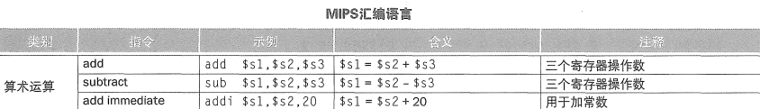
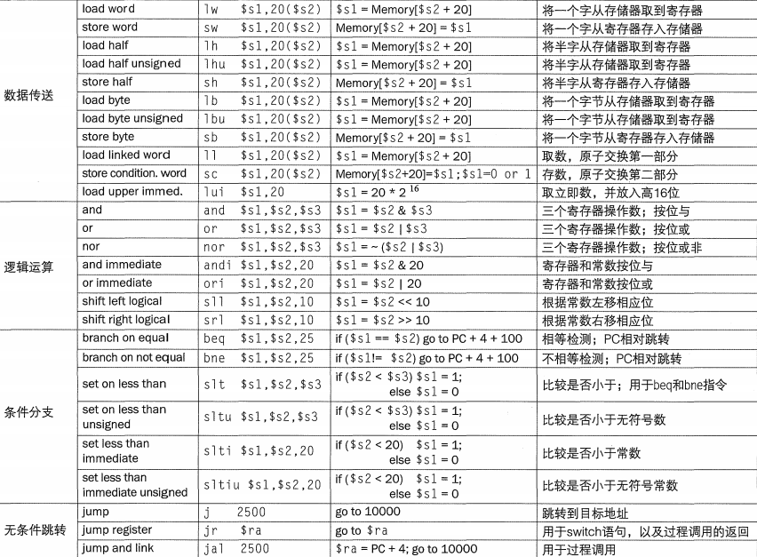

第一章 计算机抽象及相关技术
CPI： 执行每条指令所需的平均时钟周期数
SPEC分值 = 参考时间 / 执行时间
阿姆达尔定律：改进的部分占p，优化后：1-p + p/s（阿姆达尔定律：改进后的执行时间 = 改进部分执行时间÷改进部分的改进倍数 + 未改进部分执行时间）
评价性能：相同的功能下，时间短的性能就高
第二章 指令：计算机的语言


符号扩展：
对有符号数，低位直接复制，高位全部填充为符号位
MIPS字段（32位）：
R型指令格式：
用于寄存器，指令的后半部分是三个字段
| op | rs | rt | rd | shamt | funct |
|---|---|---|---|---|---|
| 6位 | 5位 | 5位 | 5位 | 5位 | 6位 |
| 操作码 | 第一个源操作数寄存器 | 第二个源操作数寄存器 | 存放操作结果的目的寄存器 | 位移量（在移位指令中用到，移位时空出的位填0） | 功能码（进行何种运算） |
I型指令格式：
用于立即数
| op | rs | rt | constant或address |
|---|---|---|---|
| 6位 | 5位 | 5位 | 16位 |
根据op的值可以判断指令格式（R型还是I型）
PC：
程序计数器，存放正在被执行的指令的地址的寄存器
PC相对寻址（一种分支地址的寻址方式）：将PC和指令中的常数相加作为寻址结果（因为我们会提前递增PC，所以是相对于PC+4的地址）
地址生成规则示例：
jal（J型指令）：跳转地址=(PC高4位)∣(目标地址≪2)
beq（I型指令）：跳转地址=PC+4+(偏移量≪2)
需要乘4是因为MIPS指令长度均为4字节
P100
第三章 计算机的算数运算
重点看浮点。格式的表示、运算（加减乘除）
加减法：有符号数发生溢出时产生异常，无符号数发生溢出时直接忽略溢出位
减法：将减数求补（取反+1），再进行加法
乘除法：要掌握
定点数乘法：
浮点数乘法：阶码（指数）相加，尾数相乘，规格化、舍入、规格化
饱和算术：超过最大值或最小值时，取值为最大值或最小值
浮点表示：IEEE 754标准
单精度（32位）：
| s（符号位） | 指数 | 尾数 |
|---|---|---|
| 1位 | 8位（偏移量为127） | 23位 |
(-1)s × （1+尾数）× 2指数-127 （在浮点表示中隐含了一个1）
双精度（64位）：
| s（符号位） | 指数 | 尾数 |
|---|---|---|
| 1位 | 11位（偏移量为1023） | 52位 |
小数部分的二进制表示：每次乘2，若个位为1，则该位记为1，否则记为0
浮点数的加法：先对阶（指数部分一致），再将尾数相加，最后规格化
第四章 处理器
（根据翼云图灵网课）
一、单周期数据通路：
1.数字逻辑基础：
- 组合逻辑：不含存储器，输入给定时输出也唯一确定
- 时序逻辑：含存储器，至少两个输入（时钟、输入数据）
- 边沿触发时钟：只有在时钟上升沿时才写入数据
- 多路选择器：根据控制信号，从多个数据中选择一个作为输出
- 总线：数据信息多于一位的信号线
2.MIPS核心子集：
- R型指令： add , sub , AND , OR , slt
- 访存指令：lw , sw
- 决策指令：beq , j
3.指令周期：
- IF（Instruction Fetch，取指令）
- 根据PC（程序计数器）提供的地址，从这个地址的指令存储器中取出指令
- 更新PC，PC = PC+4（每条指令占四个字节）
- ID（Instruction Decode，指令译码与读寄存器）
- 指令译码：根据操作码（opcode）确定指令类型（R型、I型、J型）。
- 寄存器读取（根据指令类型）
- 生成控制信号：如
RegDst、ALUSrc、MemtoReg等。
- EX（Execute，执行运算）
- MEM（Memory Access）：
- 访存：lw , sw
- 分支：若分支条件成立（如
beq），更新PC为目标地址；否则顺序执行
- WB （Write Back，写回）
不同指令的流水线示例
| 指令类型 | IF | ID | EX | MEM | WB |
|---|---|---|---|---|---|
| R型指令 | 取指令 | 译码并读寄存器 | 执行算术运算 | 无操作 | 结果写回寄存器 |
| lw指令 | 取指令 | 译码并计算地址 | 计算内存地址 | 读取内存数据 | 数据写回寄存器 |
| sw指令 | 取指令 | 译码并计算地址 | 计算内存地址 | 写入内存数据 | 无操作 |
| beq指令 | 取指令 | 译码并比较值 | 计算分支地址 | 更新PC（若跳转） | 无操作 |
寄存器（Register）：用于临时存储CPU当前正在处理的数据、指令或地址。
存储器（Memory，通常指主存/RAM）：存储程序、数据及操作系统代码。
单周期实现中，CPI为1，每个指令都和lw指令花一样时长，时钟周期长（主要缺点）；多周期实现中，CPI为4或5，但时钟周期短（缩短到1/5），所以运行速度更快。
多周期：
拆分指令为多步骤，每步1个时钟周期，复用功能部件。
有限状态机（FSM）：每个状态对应一个执行阶段，输出控制信号（如
RegWrite,MemRead）。状态转换：根据当前状态和指令操作码（
opcode）跳转到下一状态。单周期按最慢指令设定周期；多周期按最慢阶段设定，阶段耗时远小于完整指令。
4.MIPS核心子集数据通路：
二、单周期控制单元：
1.ALU控制单元
ALU控制线（4位）：决定ALU具体执行什么运算
ALU操作码（ALUOp）（2位）：主控制单元根据指令操作码，向ALU控制单元输出
| ALUOp | 指令 | 功能 |
|---|---|---|
| 00 | 访存 | ALU将基址和偏移量相加（0010）（这4位是对应的控制线） |
| 01 | 分支beq | ALU将两源操作数相减（0110） （若等于0说明相等） |
| 10 | R型 | 由funct字段进一步指定 |
flowchart LR
主控制单元 --ALUOp--> ALU控制单元
ALU控制单元 --若ALUOp=10--> funct字段
funct字段 --> 主控制单元
多级译码：由ALUOp和R型指令中的funct字段共同决定ALU控制线
2.控制信号
每个周期都会进行读操作，所以不需要读使能
RegWrite ：只有R型和lw需要进行写（写回寄存器），所以需要写使能（而lw写回rt，R型写回rd，所以写回时需要加个多路选择器来选择目标寄存器——RegDst）
ALUsrc ：ALU source，选择ALU的源操作数，为1时选取符号扩展后的立即数，为0时选取rt作为源操作数
MemRead/MemWrite ：只有lw读数据存储器（MemRead=1），sw写数据存储器（MemWrite=1）
MemtoReg ：决定从哪里写回寄存器，lw从存储器写回（MemtoReg=1），R型从ALU写回（MemtoReg=0）
branch
：选择目标地址写回PC（branch=1），选择PC+4写回分支（branch=0）,（加上ALU的Zero标志=1，rs-rt=0，PCsrc=1）
加上ALUOp，就是主控制单元发出的8个控制信号（共9位，因为ALUOp有两位），由ALUOp和R型的funct字段得到
指令译码：主控制单元将操作码翻译成控制信号并发送到对应器件
3.带控制的MIPS核心子集数据通路
（一般会给一个，可能要修改）
4.指令控制信号表
| 指令 | RegDst | ALUSrc | MemtoReg | RegWrite | MemRead | MemWrite | Branch | ALUOp1 | ALUOp0 | jump |
|---|---|---|---|---|---|---|---|---|---|---|
| R型指令 | 1 | 0 | 0 | 1 | 0 | 0 | 0 | 1 | 0 | 1 |
| lw | 0 | 1 | 1 | 1 | 1 | 0 | 0 | 0 | 0 | 1 |
| sw | X | 1 | X | 0 | 0 | 1 | 0 | 0 | 0 | 1 |
| beq | X | 0 | X | 0 | 0 | 0 | 1 | 0 | 1 | 1 |
| j | X | X | X | 0 | X | 0 | 0 | X | X | 0 |
j指令（需掌握吗）需要一个控制信号jump（低电平有效）
三、流水线数据通路与控制
1.指令周期与流水级
与指令周期的五个阶段相对应，把数据通路分为5个流水级，形成流水线（pipeline）
时钟周期数 = 指令数 + 流水级级数 - 1
理想加速比 = 流水级级数（理想条件：每个流水级时间等长；流水线没有开销；指令数足够大）
省略流水周期可能导致：结构冒险：两条指令抢占同一流水级的硬件部件（解决方法：添加硬件）
2.流水线性能
流水线并不减少单条指令的执行时间，而是通过增加指令吞吐率来增加性能。即，在同一时间处理多条指令的不同阶段，实现指令级并行。
流水线和单周期相比，CPI均为1，指令数一致，主要就是减少了时钟周期（适度进一步划分流水级可以缩短时钟周期）。
吞吐率：评价流水线性能的重要指标。
3.流水线寄存器
为了保留每条指令各自的数据，需要在流水级之间插入流水线寄存器，以左右两个流水级命名分别叫做IF/ID、ID/EX、EX/MEM、MEM/WB
（对于状态/时序单元，左半边涂灰表示写入，右半边涂灰表示读取；组合单元涂灰表示使用）
4.流水线分析：lw
- IF（取指）：从PC取到指令的地址，由指令存储器读出指令内容，上面的add计算PC+4，这两部分内容会被这条指令的后续过程用到，所以要传给IF/ID
- ID：每条指令都要译码产生控制信号，都要读寄存器。（对于beq，PC+4要留到第三个周期才能计算分支目标地址，所以PC+4要继续传给ID/EX）。指令译码读出了rs、rt的数据，这些要送给第三周期执行运算，因此也要给ID/EX。对lw而言，要立即数加上rs的基地址才得出取数地址，所以扩展后的立即数也要送入ID/EX
- EX：ALU结果、零标志位，分支目标地址都要传给EX/MEM
- MEM：从数据寄存区读的数据，ALU运算结果传给MEM/WB（rt的寄存器号也要一路传过来，用于将数据写回）
- WB：将访存读取的数据写回寄存器堆
也就是后面要用到的数据，需要先存储在流水线寄存器中。
控制信号要一级一级传递，如果被使用了就不用继续传递了。
5.流水线的冒险：数据冒险
后面的指令要读取到前面指令写回寄存器的值，但是前面指令还没写。
sub在CC5才将 -20 写入 $v0，and 和 or 在CC3/CC4就要读取
-20 ，此时$v0的值还是 10，于是产生了数据冒险。
解决方法1：旁路
-20在CC3的ALU计算后就已经产生，所以可以从EXE/MEM寄存器中直接获取数据传给and指令的ALU（ALU-ALU旁路），从MEM/WB寄存器将数据传给or指令的ALU（MEM-ALU旁路），这种跳过寄存器写回、直接从流水线寄存器取得数据的方法称为转发或旁路。
同时有ALU-ALU旁路 和 MEM-ALU旁路 成为全旁路。
解决方法2：阻塞
lw指令的数据在MEM级才产生，而在and指令的ALU就要用到，所以要在lw指令后添加一个气泡/阻塞周期：
将add的控制信号全部清零，将其变为空指令，同时将add指令的地址（PC+4-4）重新写回PC，在lw的EX周期重新执行add指令（以上过程由冒险检测单元实现）
6.流水线的冒险：控制冒险
分支引发的控制冒险：如果分支成功的话要跳过一些指令，但是这些指令的一部分却被执行了
解决方法1：分支预测
静态分支预测策略：采取总是假设分支不发生的策略，执行那些紧跟在beq后的指令
动态分支预测策略：保存近几次记录，预测分支是否发生（在分支比例不大不小时采取）
解决方法2：缩短分支延迟
计算分支目标地址 + 判断分支条件（在ID级从寄存器堆中取出rs和rt数据送入一个相等检测单元，若相等则发送信号），在ID级就完成了分支
如果beq的上一条指令是R型指令，且需要比较R型指令的运算结果，则在旁路基础上还要阻塞一个周期；如果上一条是lw，则要阻塞两个周期（这是假设beq在ID阶段判断分支）
7.带冒险控制的单周期流水线图
新增的：旁路单元；冒险检测单元（支持阻塞）；相等检测单元（register后的=）
第五章 存储器层次结构
一、存储器技术概要
时间局部性：某个数据被访问，很快会再次被访问
空间局部性：某个数据被访问，它附近的数据很可能被访问
二、高速缓存cache
1.访存性能概念：命中与缺失
计算平均访问延时（命中的+不命中的）
访存：访问内存，分读取和写入
访存指令：MEM-reg数据传送指令 = L-S指令（lw和sw指令）
CPU访问内存时，都会优先询问cache是否保存着所需数据
命中：cache保存着所需数据
缺失：cache不包含所需数据
缺失率 = 1 - 命中率 MR = 1 - HR
2.访问阻塞周期数
命中时间：CPU访问cache的时间（通常1T）
缺失代价：CPU访问内存比直接访问cache多出来的额外开销
为了评价存储器的性能，程序执行的周期数 = CPU执行周期数 + 访存阻塞周期数
访存阻塞周期数 = 访存次数 * 缺失率 * 缺失代价
3.直接映射
块号
cache块号 = 内存块号%cache块数
对2n 块的cache， cache块号 = 内存二进制块号的后n位（是块号，最后两位不算块号）
内存地址字段
cache块号之后：块内（字节）偏移
cache块号：索引位
cache块号之前：标记位
cache位数计算
例、一个有16KB数据的cache，块大小为4个字，地址为32位，该cache总共多少字节？cache总容量是实际数据容量的多少倍？
一个cache：有效位 + 地址标记 + 数据
块大小为4个字 -> 16B -> 24 -> 块内字节偏移：4位（低4位）-> 内存块号：高28位（其中低n位为cache块号）
16KB数据 ->cache中的数据域为16KB
计算cache有多少块：数据16KB / 块大小16B = 1k = 1024 = 210 ，cache有10块，标记位：28-10 = 18
cache总共多少字节： （1（有效位） + 标记位 + 数据）* 行数 = （1 + 18 + 128（4个字=16个字节= 128位））* 行数（cache块数=1024） = 147KB = 18.375k字节（1字节8位）
多少倍：18.375 / 16
缺失分类
- 首次访问cache中没有的块必然产生的缺失（冷启动强制缺失）
- cache容量不能容纳程序执行需要的所有块，部分块被替换后再次调入cache（容量缺失）
- 多个内存块竞争映射到同一个cache块导致仍需使用的块被替换（冲突碰撞缺失）
以上是3C模型
cache访问缺失处理的步骤
- 将PC + 4 - 4（即当前指令的地址）写回PC，并阻塞处理器（等待这次访存结束）
- 访问内存，将内存块写入cache
- 再次访问cache并命中
写策略：
写直达：数据写入 cache 的同时，也立即写入下一层
写回：数据先只写入 cache，等被替换出 cache 时再写回到下一层
写分配策略（写命中失败时的策略）：
写分配：先把数据块从主存调入 cache，再写入 cache。
不写分配：直接把写数据写入下一层 cache/主存，不加载到 cache。
4.相联映射
全相联映射
内存块可能映射到任何一个cache块
如果cache已满，则替换掉最长时间没用过的内存块（最近最少使用，LRU）
没有碰撞缺失 -> 容量缺失
适用于块数较少的cache
组相联映射
对cache块进行分组，一个内存块直接映射到一个组，在组内部全相联
一组包含n块 则称为n路组相联，其相联度为n
cache组号 = 内存块号 % cache组数
对2n 组的cache，cache组号 = 内存二进制块号的后n位
替换策略：最近最少使用
全相联、组相联cache总位数的计算
5.降低缺失代价：多级cache
全局缺失率，局部缺失率（类比打鱼）
6.cache性能评价
平均访存时间（AMAT）：命中时间 + 缺失率*缺失代价（只考虑访存指令的时间）
CPI：总周期数 / 总指令数
AMAT = Hit time + Miss rate × Miss penalty
AMAT = Cache 命中时访问所需时间 + 缺失率 * Cache 缺失后从下一层（或内存）中取数据所需的时间
CPI = CPI_base + Memory_stall_cycles_per_instruction
Memory_stall_cycles_per_instruction = （访存指令占比 + 1） × (AMAT - Hit_time)
加1是因为所有指令都要取指
*多核CPU中的cache一致性（没看懂）
（二）最后有复习题
三、虚拟存储器
1.虚拟地址转换为物理地址
内存是磁盘的cache
页（page）：磁盘和内存之间交换的块
对4kb的页，需要212 位表示页内偏移（虚拟地址和物理地址的页内偏移是一一对应的）
剩下来的就是虚拟页号（32-12=20）和物理页号（30-12=18）
虚拟页号通过查询页表（page table）映射到物理页号
页内偏移和物理页号拼接形成物理地址
每个进程都有一张页表，存放在自己的内存空间，页表首地址放在页表寄存器（页表指针）中，页表项记录了每个虚拟地址对应的物理地址，有多少个虚拟页号一张页表就有多少项
访问页不在内存中时（有效位为0），产生一次缺页，需要读取磁盘用于扩充物理内存的部分即交换区
2.替换策略 写策略
引用位：近似实现LRU（LRU只在全相联和组相联中有涉及）
脏位：判断是否写回
3.TLB快表
CPU访存时，先用虚拟地址读取页表，得到物理地址，再进行真正访存，为了加快读取页表得到物理地址的访存，引入了页表的cache，即TLB
TLB只保存部分页号的映射信息
虚拟页号填在TLB的标记位字段中
完整访存过程：
4.地址翻译与数据访问全流程
CPU 发出虚拟地址
→ 首先查询 TLB（Translation Lookaside Buffer）。TLB 查询结果：
- 命中：
- 直接获得物理地址 → 跳到步骤 4。
- 缺失：
- 访问页表（存储于内存中）→
- 若页表项存在（有效）：
- 获得物理地址，并更新 TLB → 跳到步骤 4。
- 若页表项不存在（缺页）：
- 触发 缺页异常（Page Fault） →
- 操作系统介入：从磁盘加载缺失页到内存
- 更新页表项和 TLB
- 重新执行导致缺页的指令 → 重新开始流程。
- 操作系统介入：从磁盘加载缺失页到内存
- 触发 缺页异常（Page Fault） →
- 若页表项存在（有效）：
- 访问页表（存储于内存中）→
- 命中：
生成物理地址
（来自 TLB 或页表）用物理地址访问 Cache：
- Cache 命中：
- 直接返回数据给 CPU → 流程结束。
- Cache 缺失：
- 访问 内存 读取数据 →
- 将数据所在整个 Cache 块（Block） 载入 Cache
- 返回目标数据给 CPU。
- 将数据所在整个 Cache 块（Block） 载入 Cache
- 访问 内存 读取数据 →
- Cache 命中：
📌 总结流程图
graph LR
A[CPU 虚拟地址] --> B{TLB 命中？}
B -- 是 --> C[获得物理地址]
B -- 否 --> D[访问页表（内存）]
D --> E{页表项有效？}
E -- 是 --> F[更新 TLB] --> C
E -- 否 --> G[缺页异常] --> H[磁盘加载数据到内存] --> I[更新页表] --> F
C --> J{访问 Cache}
J -- 命中 --> K[返回数据]
J -- 缺失 --> L[访问内存] --> M[载入 Cache 块] --> K
- 页表查询失败 ≠
直接访问内存数据，而是触发缺页异常（涉及磁盘 I/O）。
- 内存访问仅在两种场景出现：
- TLB 缺失时访问页表（读内存）
- Cache 缺失时加载数据块（读内存）
- TLB 缺失时访问页表（读内存）
- 磁盘参与：仅当缺页异常发生时，由操作系统从磁盘加载数据。
完整链条：CPU → TLB → 页表（内存）→ 物理地址 → Cache → 内存 → 磁盘
第六章 IO和并行处理器
总线（Bus）是计算机系统中共享的通信链路，用于连接处理器、内存、I/O设备等子系统，通过一组共享的物理线路传输数据、地址和控制信号。
主从模式：
- 主设备（Master）：发起事务（如CPU、DMA控制器）
- 从设备（Slave）：响应请求（如内存、磁盘控制器）
访问方法：仲裁机制（菊花链 简单；低优先级设备可能“饿死”
vs 集中式 公平高效 ）、事务阶段（请求→仲裁→传输）。
事务流程
- 请求阶段：主设备申请总线使用权（
BusReq信号）。- 仲裁阶段：仲裁器授权（
BusGrant信号）。- 传输阶段：
- 地址阶段：主设备发送目标地址。
- 数据阶段：读写数据（可能多周期突发传输）。
总线握手协议
- 同步总线
特征：由全局时钟驱动，信号在时钟边沿采样。
时序示例：
1
2
3时钟周期1：主设备发地址 + 命令（Read/Write）
时钟周期2：从设备准备数据
时钟周期3：数据稳定传输缺点：时钟偏移限制总线长度和速度。
- 异步总线
- 特征：无全局时钟，依赖握手信号（
Req/Ack）协调传输。（也就是主设备发出了请求信号，并且从设备接受了请求信号，则写。两个都撤销了，则结束） - 写操作流程（PPT 31页）：
- 主设备置地址/数据 → 置
Req=1（请求传输）。 - 从设备接收数据 → 置
Ack=1（确认完成）。 - 主设备撤销
Req→ 从设备撤销Ack（结束事务）。
- 主设备置地址/数据 → 置
- 优点：适应不同速度设备，支持长距离传输。
🔍 关键区别：同步总线“定时发送”，异步总线“协商发送”。
直接存储器访问方式 (Direct Memory Access, DMA)：
- 原理： 引入专用硬件控制器 (DMA 控制器)。 当需要传输大量数据（如磁盘读写）时，CPU 初始化 DMA 控制器（告知数据位置、大小、设备），然后继续执行程序。DMA 控制器接管总线，直接在 I/O 设备和内存之间传输数据。传输完成后，DMA 控制器中断 CPU 告知结果。
- 特点： 数据传输过程 CPU 基本不干预，只在开始和结束时参与。 极大解放 CPU。适合高速、大批量数据传输。
- 优缺点： 传输速率高，CPU 负担轻；需要额外的 DMA 控制器硬件，控制逻辑复杂。